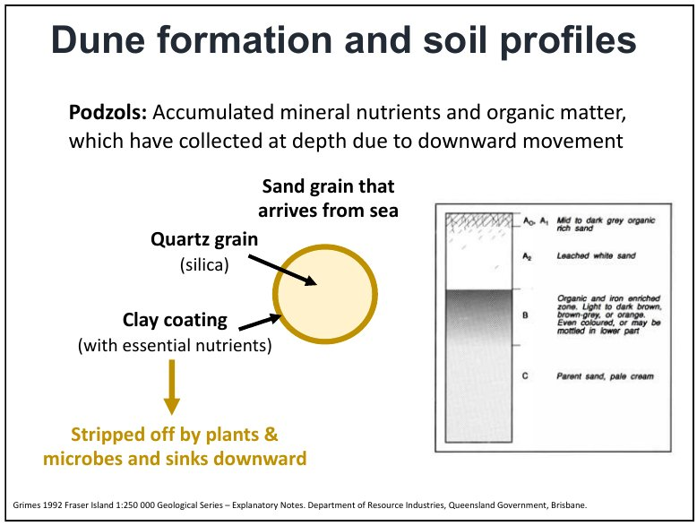
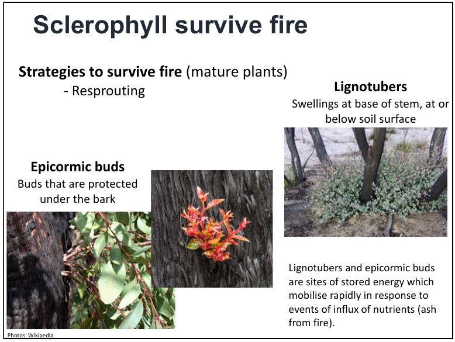
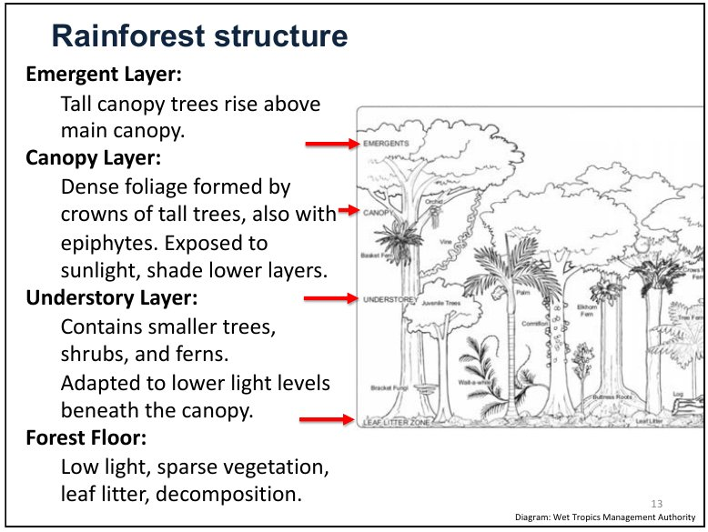
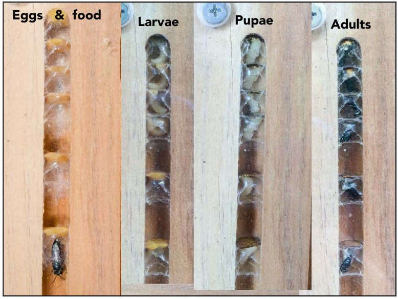
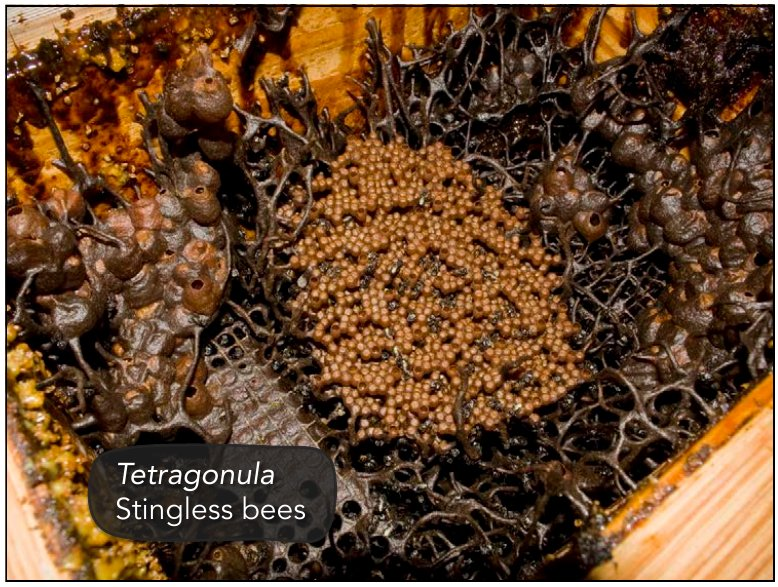

Australian Terrestrial Ecology
TEC / Lectures 1-12 and five readings
Focused lessons / Lecture 5 onwards
The Catch-Up Route
A shorter teaching route, not a list of topic names. Work through the mechanisms, partnerships and examples below. The full reference remains available for extra detail; this route removes repetition and species catalogues, not whole conceptual topics.
Jump to a lecture
5. Sclerophyll, fire and ecological partnerships
Why tough leaves make sense
Sclerophyll means hard-leaved. On nutrient-poor soils, a leaf is expensive to replace. Long-lived leaves retain nutrients; fibre and lignin make tissues tough. Thick cuticles, protected gas-exchange pores called stomata, reflective surfaces and hanging leaves can reduce water loss or heat exposure. These are responses to nutrient and water constraints, not one trait shared equally by every species.
Oils, shed bark and slowly decomposing tough litter contribute fuel. Fire can suppress fire-sensitive competitors, helping maintain sclerophyll vegetation. This feedback does not mean plants deliberately want fire, or that every fire benefits them. Classifying vegetation also requires height, layers, canopy cover and dominant plants—not leaf toughness alone.
How plants survive, regenerate or fail after fire
Thick bark protects living tissue. Epicormic buds beneath bark and lignotubers—basal woody swellings with buds and reserves—allow resprouting. Other plants replace killed adults from seeds. Serotiny retains seeds on the plant, often in woody fruits that release them after fire. Soil seed banks offer another route; heat or smoke can trigger germination, with light, reduced competition and ash supporting establishment. Not all banksias are serotinous.
Mountain ash: reburning before young trees mature and replenish seeds can collapse regeneration. A fire regime includes interval, intensity, season, extent and patchiness. Cultural burning uses place-specific knowledge and Traditional Owner authority to manage resources and mosaics, not one universal cool-burn recipe. Protecting a bee-nest tree during a burn illustrates selective care; sediment pollen and charcoal connect changed management with vegetation and fire history.
Fungi and partnerships: who gives what to whom?
Fungi are not plants and do not photosynthesise. Fine filaments are hyphae; their network is the mycelium. A mushroom is a spore-producing reproductive structure, not the whole fungus. Decomposer fungi break down dead material, releasing nutrients and returning carbon through respiration; other fungi associate with living hosts. Fungi also affect soil structure and provide animal food.
Mycorrhiza = fungus–root association. Hyphae explore beyond the root, improving access to water and mineral nutrients such as phosphorus. The plant supplies photosynthetically produced carbon. Ectomycorrhizal fungi grow around roots and between cells; arbuscular fungi form exchange structures inside root cells. These are different types: do not generalise the slide's ectomycorrhizal description to most plants. The fungus helps access existing phosphorus; it does not create it. Losing appropriate fungal partners can therefore impair plant establishment even if seeds arrive.
Nitrogen fixation is a bacterial process. Plants cannot generally use atmospheric N2 directly. Bacteria convert it into usable nitrogen compounds, supporting proteins and growth. In a root-nodule partnership the plant supplies carbon and a suitable environment, while receiving usable nitrogen. Acacias associate with rhizobia; she-oaks with Frankia. Neither is a fungus. This can help pioneers in low-nitrogen soils, but does not solve phosphorus shortage. Photosynthesis captures carbon; mycorrhizas improve nutrient access; fixation makes atmospheric nitrogen biologically available.
Lichen = fungus plus photosynthetic partner, usually a green alga or cyanobacterium. The fungus supplies protective/absorptive structure; the partner supplies carbohydrates. Some cyanobacteria also fix nitrogen, so a lichen can combine carbon capture and nitrogen input. Its fungal partner is not doing the photosynthesis or the fixation.
Ant–seed partnership: an elaiosome is a fatty seed reward. Ants carry the seed, eat the reward and leave the seed elsewhere: myrmecochory. Burial may protect the seed and favour later establishment; eating the reward need not destroy it. Mistletoe is different: a hemiparasite photosynthesises but draws resources from a host. Mistletoebirds eat its fruit and deposit sticky seeds on branches, enabling dispersal. Native cherry taps roots instead. A parasite can supply food-web resources while imposing costs on its host.
The reading connects these mechanisms
Orians and Milewski: with light and water available, carbon can be abundant relative to scarce nutrients needed for growth. Plants can invest in carbon-rich defences, wood, nectar and nutrient acquisition. Poor-quality litter may accumulate, supporting intense fire; ash gives a temporary nutrient pulse, while gases, erosion and leaching can cause long-term losses. Nectar provides energy, not a complete diet for growing animals. This is a linked explanatory theory with testable hypotheses and anomalies—not proof that nutrient poverty causes every Australian trait.
Course evidence: Lecture 5, PDF pp. 4–14, 19–30; Orians and Milewski, especially PDF pp. 1–8 and 17–23. Full explanation and checks.
6. Rainforest structure, succession and coexistence
Light creates different environments
Emergents rise above the canopy; smaller trees, shrubs and ferns occupy the shaded understorey. Large, relatively thin leaves capture limited light. Drip tips help shed water. Epiphytes use plants for support without necessarily taking their resources; lianas climb to light instead of building a self-supporting trunk. Buttress roots provide support and can aid access to shallow resources. Warm, moist conditions support decomposition and rapid nutrient recycling, not unlimited nutrient supply.
Treefall gaps start secondary succession
A fallen tree opens light and space. Fast-growing pioneers establish, then create shade and shelter that allow some slower, shade-tolerant species to develop. These can eventually replace pioneers. Different-aged gaps make a habitat mosaic. This is secondary succession because soil and biological legacies remain; primary succession starts on new substrate. A small treefall and an extensive severe fire are not equivalent disturbances.
Why the most prolific tree does not necessarily take over
Janzen–Connell: specialised enemies cause high seed/seedling mortality near same-species adults or dense offspring. Local commonness becomes costly—negative density dependence—helping maintain coexistence. Animal seed dispersal can move seeds away from concentrated enemies. It is one mechanism alongside different resource use and disturbance opportunities, not a guarantee that distant seeds survive.
Figs provide fruit and interactions for many animals; large trees supply canopy, hollows and structure. A keystone species has disproportionately large effects relative to its abundance; a keystone structure is a crucial physical resource. Losing large-seed dispersers can disrupt recruitment and gene flow while adult trees remain. Flowering/fruiting timing determines when partners can use resources. At rainforest–sclerophyll ecotones, fire can suppress rainforest expansion where soils and moisture would otherwise permit it: sclerophyll is not simply unfinished rainforest.
Course evidence: Lecture 6, PDF pp. 7–25. Full explanation and checks.
7. Vertebrates: digestion, engineering and life histories
Reproductive groups and strategies
Monotremes lay eggs and feed young milk. Marsupials give birth early, followed by extensive development at a teat, often in a pouch. Placentals generally develop longer in the uterus: native bats and rodents belong here, so placental does not mean introduced. Gondwanan history, later dispersal and extinction shape distributions; present location alone does not establish a lineage's origin.
Diapause pauses embryo development in some kangaroos/wallabies, linking reproduction to maternal conditions and opportunity. Semelparity concentrates reproduction into one major episode: male antechinus expend heavily in mating, with stress-related collapse and death. Neither is a universal marsupial strategy or a conscious evolutionary choice.
Microbes make difficult diets usable
Koala young acquire gut microbes through their mother's pap, a specialised faecal material, as they move from milk to leaves. Microbes help process a fibrous, chemically defended diet; low energy expenditure also matters. Grazing macropods use gut fermentation. In brush-turkey mounds, microbes do a different job: decomposition produces heat that incubates eggs, with the male maintaining mound conditions. Same broad actors, different ecological mechanisms.
Animals modify processes and habitats
Diggers create pits that trap litter, alter fertility and improve water infiltration. Wombat burrows shelter other organisms. Some mammals disperse truffle-like fungal spores, linking animals → mycorrhizal fungi → plant nutrition. Fruit/nectar bats move seeds and pollen; insectivorous bats consume prey. Counting them all as interchangeable vertebrates hides these functions.
Apex predators can influence smaller predators and other prey through trophic cascades, developed under conservation below. Transmissible facial tumour disease can reduce devil populations, potentially changing those interactions. In arid systems, abundant termites as food plus spinifex as shelter are a proposed explanation for rich lizard communities—not proof of a single cause. Desert frogs conserve water underground and breed after substantial rain.
Reported firehawk behaviour exploits prey flushed by fire, including fire-spreading accounts informed by Indigenous observations. Dawn singing has alternative hypotheses: colder insects make less background noise, sound transmission conditions differ, or well-fed birds can afford to signal rather than forage. Light also affects timing. Distinguish plausible mechanisms from established universal explanations.
Course evidence: Lecture 7, PDF pp. 2–4, 7–14, 17–21, 25–32. Full explanation and checks.
8. Invertebrates: life cycles, mutualism and engineering
A life cycle can need more than one habitat
Arthropods have jointed appendages and an external skeleton. Insects have head, thorax and abdomen; spiders are not insects, and earthworms are not arthropods. Complete metamorphosis: egg → larva → pupa → adult. Larva and adult may use different food and habitat. Incomplete metamorphosis: egg → nymph stages → adult, without a pupa. Adult visits to flowers do not demonstrate that a site supports breeding.
A morphospecies groups specimens by visible differences when identification is unavailable. It supports comparisons but is approximate: sexes or life stages of one species may look different, while separate species may look alike. Poor identification and limited monitoring should not be mistaken for low diversity.
Fig and wasp complete each other's life cycles
Fig flowers are inside the fig structure. A female pollinating wasp enters carrying pollen and lays eggs in some flowers. Offspring develop and mate inside; males make exit holes, and females leave carrying pollen to another fig. The fig gains pollination, the wasp reproductive habitat. This is a specific mutualism, not simply an insect visiting an exposed flower; not every wasp inside a fig is its pollinator.
Wood-moth larvae tunnel in trees and can create future shelter while feeding. Scribbly-gum moth larvae feed under bark, grow and double back to consume scar tissue; the widening trails record the interaction. Herbivory and habitat creation can occur together.
Termites connect microbes, carbon and other animals
Gut microbes help termites process lignocellulose, moving nutrients and carbon out of plant material. Termites are also abundant prey. Their eusocial colonies divide reproduction, brood care, foraging and defence among queens/kings, workers and soldiers. Winged reproductives disperse and found nests; a mound is not merely a pile of excavated soil.
Nest architecture and ventilation regulate temperature, moisture and gases; underground refuges provide another solution. North–south-oriented magnetic mounds reduce midday heating while receiving morning/afternoon sun—one species' solution, not a universal design. Protected nests can allow fire survival while dead wood remains available. Nests provide refuges, and internal tree excavation helps develop hollows used by birds, mammals and stingless bees. Earthworm burrowing likewise changes soil air, water and organic matter.
Course evidence: Lecture 8, PDF pp. 2–4, 8–16. Full explanation and checks.
9. Bees: resources, nesting, sociality and competition
Pollination and brood food are different processes
Nectar supplies sugar energy; pollen provides important nutrients used in brood food. Anthers produce pollen; a stigma receives it. Movement between them is pollination, preceding fertilisation and seed formation. A visitor must make effective contact and transfer suitable pollen; more visits do not automatically mean more successful reproduction. Bee origins are inferred from ancestry analyses plus fossil dates, not just today's distribution.
Follow one nesting female
A solitary female may excavate soil or use a stem/cavity, provision a cell, lay an egg and close it. The larva eats its food store, pupates and becomes an adult. Leafcutters use cut leaf pieces to construct cells. Cuckoo bees use another bee's nesting investment: brood parasitism. Protecting only flowers misses soil, stems, cavities, nest-building materials and larval resources.
Social categories describe behaviour, not crowd size
- Solitary: each female cares for her brood. An aggregation is many independent nests nearby.
- Communal: a nest is shared but females mainly care for their own offspring.
- Quasisocial: same-generation females cooperate in brood care and all reproduce.
- Semisocial: cooperative care plus reproductive division of labour, without the full overlapping-generation criterion.
- Eusocial: cooperative brood care, reproductive division of labour and overlapping adult generations. A caste is a role such as queen or worker.
Stingless bees are highly eusocial, with brood cells and food stores in organised nests. Many need existing cavities. A perennial colony needs resources through time: one flowering event cannot support its whole existence. Old hollows cannot be instantly replaced by seedlings. Colonies can also fight and usurp nests; stingless does not mean non-aggressive, and a crowd at an entrance is not by itself evidence of cooperation.
Stanford story: Brazilian stingless bees introduced for pollination research were thought lost, then rediscovered decades later. Introductions can persist unnoticed. This is not evidence that moving bees is harmless, or that keeping one managed species conserves all native bee diversity.
Course evidence: Lecture 9, PDF pp. 3–5, 9–20, 26–45; some later slides are photographs or video cues. Full explanation and checks.
10. Threats interact, including through beneficial-looking species
A green patch can still lose function
Habitat loss removes area; fragmentation separates patches; degradation lowers their quality. Edges can be windier, hotter and drier, increasing tree damage. Losing old hollows removes nesting sites; crossing gaps exposes animals to roads or predators. Pollination and dispersal can fail while mature trees remain. Smaller rainforest fragments in the lecture bee study retained fewer species; nesting, flowers and movement provide mechanisms to investigate, not one guaranteed explanation.
Different invaders require different interventions
Cats/foxes kill prey; cane-toad toxins harm predators; weeds can shade native regeneration. Introduced honey bees may compete for flowers and hollows and transmit pests/pathogens. Migratory hive placement can supply crop pollination while raising different questions about native pollinators. Agricultural service and biodiversity conservation are not identical objectives.
Asian honey-bee invasion: a small founding population causes a genetic bottleneck, but a queen mated with many males carries multiple paternal lineages. One introduced colony is therefore not genetically equivalent to one mating pair. Low founder numbers do not guarantee failure.
Native does not mean harmless in every context
The native noisy miner differs from the introduced common/Indian myna. Simplified habitat can favour aggressive miners that exclude smaller birds. Restoring understorey changes shelter and encounter conditions; culling alone may allow recolonisation. Mistletoe can likewise provide food yet impose damaging loads on stressed isolated trees. Evaluate the changed interaction, not a permanent good/bad label.
A few listed native bees do not prove most are secure: monitoring and assessment are incomplete. The suggestion that varroa might reduce feral-honey-bee competition is a hypothesis, not proof of net native-bee benefit. Absence of data is not absence of decline.
Course evidence: Lectures 10–12 combined PDF pp. 3–20. Full explanation and checks.
11. Conservation: causal interventions, outcomes and authority
Listing and announcements are not recovery
Vulnerable, endangered and critically endangered describe increasing extinction risk. Extinct in the wild differs from extinct everywhere. The lecture's listing pathway is nomination → scientific assessment → consultation → ministerial decision → protection/planning. Evidence and assessment effort can be taxonomically biased. Legal recognition or a new policy still needs funding, enforcement and threat reduction to produce recovery.
Northern hairy-nosed wombat: habitat protection and sustained management accompanied recovery in numbers, while restricted populations still left serious risk. Glossy black-cockatoo: nest protection, food trees and nesting resources target multiple constraints with community involvement. Richmond birdwing: host-vine planting and toxic look-alike weed removal address larval resources. Count breeding, recruitment and persistence, not merely planted vines. These distinguish outcomes from effort.
Predators: explain the food-web pathway
Fences and suitable islands can exclude cats/foxes and protect prey, but need biosecurity, maintenance and appropriate habitat, and cover limited area. Mesopredator release: removing an apex predator permits smaller predators to increase or change activity, potentially harming their prey. The devil–cat–bandicoot case supports this kind of cascade. Mainland devil release is a proposal, not an established universal outcome; dingo control can also alter social structure and interactions. More or fewer predators is not automatically better in every landscape.
Choose objectives and recognise who decides
Prioritisation compares expected benefit, cost, feasibility and uncertainty. A charismatic flagship may attract support without maximising biodiversity benefit. Marxan helps choose cost-efficient combinations of places meeting specified targets; it does not choose society's values or guarantee implementation. Community stewardship, Indigenous Protected Areas and ranger programmes connect management with Traditional Owner objectives and authority, not just hectares on a map.
Trisos: five changes to research practice
Coloniality means unequal power over land, knowledge and resources can persist beyond formal colonial rule. Decoloniality means actively changing those relationships. A technically accurate study can still be extractive if outsiders set its questions and keep control of its benefits.
- Decolonize your mind: recognise knowledge beyond English papers, including language, practice and oral accounts.
- Know histories: investigate dispossession and interrupted management; apparently wild landscapes may have long human histories.
- Decolonize access: share resources and decisions, and agree data ownership/use. Data sovereignty includes informed refusal and restricted access to sensitive knowledge.
- Decolonize expertise: recognise local/Indigenous authorities as intellectual partners, not only field assistants.
- Ethical, inclusive teams: address practical barriers and unequal power, with fair credit, compensation and continuing participation.
For a fire study, agree questions, authority, data use and benefits with custodians before collecting information. Adding an acknowledgement after outsiders make the decisions does not achieve this. The paper's community mapping examples show technology supporting local knowledge and tenure, not replacing them.
Pettorelli: six actions during planetary crises
- Address the crisis: connect research to conservation decisions, not just descriptions of decline.
- Explore positive futures: develop credible alternatives with other disciplines and society, rather than only forecasting losses.
- Defend academic freedom: protect collection, publication and communication of inconvenient evidence.
- Engage politically: recognise that funding and land decisions distribute power; participate while distinguishing evidence from values.
- Inspire society: teach, communicate accessibly and demonstrate change, including institutional environmental footprints.
- Address colonial legacies: support equitable, long-term partnerships and community priorities rather than extractive research.
The connection is that evidence alone does not change institutions. A theory of change links a finding to an actor, decision, action and plausible ecological benefit. These are recommendations for practice, not six experimentally proven conservation treatments; advocacy does not justify distorting findings.
Course evidence: Lectures 10–12 combined PDF pp. 22–43; Trisos PDF pp. 1–6; Pettorelli PDF pp. 1–2. Full explanation and checks.
12. Climate changes interactions, physiology and restoration options
Carbon and climate responses operate at different levels
Photosynthesis transfers atmospheric carbon into organic matter; respiration, decomposition and fire return it. Fossil-fuel use adds carbon from geological stores. A stock is an amount stored, a sink has net uptake over an interval, and a source net release. Tree mortality can make a forest lose carbon despite substantial remaining biomass; the lecture study concerns aboveground woody biomass in studied Australian tropical forests, not every carbon pool everywhere.
Scheffers: climate-linked changes were reported in 77 of 94 assessed processes, about 82%. These include genetics, physiology, body traits, timing, abundance, ranges and interactions. It is not 82% of species dying. Inherited evolutionary adaptation differs from within-individual acclimation. Some responses benefit one population but harm another; changes can reach people through pests, crops and ecosystem services.
Timing change is not automatically harmful mismatch
If flowers and effective pollinators shift differently, lost overlap can reduce food or reproduction. But the North American bee–plant example retained substantial overlap despite advances. Compare both partners, overlap duration and performance. Specialists may have fewer alternatives than generalists, although nominal redundancy does not guarantee equal function. Migratory pollinators must also arrive where and when resources occur. The review's butterfly example loses living host plants before larvae enter dormancy: a concrete failed interaction.
Exposure matters as much as tolerance
Extreme heat can kill flying foxes, then reduce pollen/seed movement. Suitable mountain climate can retreat uphill until no higher habitat remains. Reduced insulating snow can expose mountain pygmy-possums to harsher winter cold; sea-level rise can remove low-island habitat, as in the Bramble Cay melomys story. These are distinct pathways, not all animals simply overheating.
Warming margin is the gap between a measured upper thermal limit and relevant environmental maximum. A 45°C limit against 42°C exposure gives a 3°C margin. A heat-tolerant species may still have little buffer if its habitat is hotter. Nesting microclimate, exposure duration and experimental endpoint matter. Warming can also affect termite wood decay, linking organisms back to carbon cycling.
Restoration must solve the right problem
Passive regeneration: let recovery proceed where seeds and suitable conditions remain. Assisted natural regeneration: remove barriers such as weeds around arriving seedlings. Active planting: add plants where degradation or missing seed sources prevent recovery. Nearby forest and animal dispersers can determine which route works. Match intensity to degradation; address fire, weeds and hydrology; set goals for native composition, structure and function; monitor and adapt. Planting counts are not full recovery.
Bastin's model related protected-area tree cover to environmental conditions and predicted potential canopy. Its roughly 0.9 billion hectares of additional canopy and 205 gigatonnes of carbon at maturity are conditional estimates, not empty available land, observed project success or annual CO2 removal. Canopy is projected crown area, not total land meeting a forest threshold. A carbon stock in carbon units differs from a yearly flow or CO2 mass. Ownership, existing carbon, future climate, permanence and local ecology require separate assessment. Natural grassland is not failed forest; a plantation is not automatically restored native habitat. Protecting existing systems and cutting emissions remain necessary.
Course evidence: Lectures 10–12 combined PDF pp. 44–66; Scheffers PDF pp. 2–9; Bastin PDF pp. 1–4. Full explanation and checks.
Now retrieve the mechanisms
Without looking, explain what each partner supplies in mycorrhiza, nitrogen-fixing nodules, lichens, ant dispersal and fig–wasp mutualism. Then explain changed fire → failed regeneration; treefall → succession; enemies → coexistence; animal loss → missing function; habitat change → interacting threats; intervention → measured recovery; climate change → altered interactions. Include one example and one limitation, then attempt the written prompts.
Coverage checked against the supplied material
- 5. Sclerophyll, fire and ecological partnerships
- leaf economy; fire strategies; fire regimes; cultural burning; fungal anatomy and decomposition; mycorrhizal exchange and types; nitrogen fixation; lichens; ant dispersal; hemiparasites; nutrient–fire theory.
- 6. Rainforest structure, succession and coexistence
- layers and leaf traits; decomposition; gap succession; epiphytes and lianas; buttresses; Janzen–Connell; keystone roles; dispersal and phenology; ecotones.
- 7. Vertebrates: digestion, engineering and life histories
- mammal reproductive groups; biogeography; gut microbes; engineering and fungal dispersal; diapause and semelparity; decomposition incubation; apex predators; arid food and shelter hypothesis.
- 8. Invertebrates: life cycles, mutualism and engineering
- arthropods and life stages; complete and incomplete metamorphosis; fig–wasp lifecycle; wood and scribbly moths; termite microbes; castes and nest regulation; fire refuges and hollows.
- 9. Bees: resources, nesting, sociality and competition
- food and effective pollination; nest provisioning and brood parasitism; social categories; castes; cavity dependence; nest competition; introduced-population story.
- 10. Threats interact, including through beneficial-looking species
- loss fragmentation degradation; edge and hollow effects; invasive mechanisms; founder effect and polyandry; native aggression; data gaps and hypotheses.
- 11. Conservation: causal interventions, outcomes and authority
- risk categories and listing; policy versus implementation; recovery examples and metrics; havens; mesopredator release; prioritisation and Marxan; community authority; Trisos five shifts; Pettorelli six actions.
- 12. Climate changes interactions, physiology and restoration options
- carbon cycle and stock versus flow; cross-level climate effects; phenology and network structure; habitat suitability and extreme heat; thermal margins; restoration strategies; Bastin model and units; restoration goals and monitoring.
This maps conceptual topic groups to the supplied slides and readings, not every photograph, species count or distribution map. Some slides are image/video cues without the spoken explanation; that material cannot be reconstructed with certainty from the PDF alone. This is not an official prediction of the exam or a guarantee that unlisted details cannot appear.
Quick recall of Lectures 1–4, not a restart
Richness counts species; abundance counts individuals; functional diversity concerns roles. Shared roles do not guarantee identical performance. Energy flows while nutrients cycle. Old, leached soils may be nutrient-poor; parent material and rainfall matter. A dune chronosequence substitutes different-aged sites for waiting, assuming other relevant differences are controlled. Early development can build organic matter; prolonged weathering can later deplete nutrients. Primary succession starts on new substrate; secondary succession retains soil and biological legacies.
Full reference contents
Full reference / Assessment
Assessment and Course Coverage
A study guide connecting the lectures and five supplied readings. Learn what happens, why it happens, and an example that supports the explanation. Species names identify useful stories here; they are not a memorisation list.
Confirmed in Lecture 1: written exam 40%, field book 50%, Insights assignment 10%. The written exam has four longer answers (roughly 2-5 paragraphs each) and three shorter answers (roughly 1-2). No duration, permitted materials or per-question marks are supplied in these slides. There is no CRE-style oral requirement stated here.
The Insights task asks what ideal Australian fire management might look like for biodiversity, Country, people and culture; the slides give 700-900 words and require an AI declaration. The written deadline text contains a date/day inconsistency, so confirm the deadline and full requirements in Blackboard rather than relying on that line.
Lectures and readings are integrated. This version covers Lectures 1-12 and the five supplied papers. Focus on causal explanations, examples, evidence and limitations rather than lists of species or country totals. Field-book details and later assessment instructions can change the preparation needed.
What to revise first
- Old landscapes, nutrient balance and fire → plant traits, animal nutrition and feedbacks.
- Fire regimes and cultural management → recovery strategies and landscape mosaics.
- Succession and rainforest diversity → light, gaps, seed dispersal and Janzen–Connell.
- Functional roles and mutualisms → why flowers, nests, fungi and dispersers connect.
- Interacting threats and climate impacts → change from individuals to ecosystems and people.
- Restoration and evidence → biophysical potential versus feasible, appropriate outcomes.
- Who decides, whose knowledge and how action happens → five ethical shifts and six crisis actions.
That order is inferred study advice, not official topic weighting or a prediction of the seven questions. The remaining topics are not excluded.
Assessment source: Lecture 1, PDF pp. 37-38. References throughout use PDF page numbers; most pages contain two numbered slides.
Lecture 1
Biodiversity: What Changes When Life Is Lost?
Biodiversity means variety in life, not simply the number of animals in a place. It includes variation within species, differences between species, different ecosystems, and the different jobs organisms do.
Four kinds of diversity
- Genetic diversity: inherited variation within a species. Different individuals can respond differently to drought, disease or heat, providing material for selection and adaptation.
- Species diversity: which species occur, how many, and how individuals are distributed among them. Richness counts species; evenness describes how balanced their abundances are. Two forests can each contain ten species but differ greatly if one is almost entirely one species.
- Ecosystem diversity: variation among systems such as rainforest, woodland, dunes and wetlands. An ecosystem includes interacting organisms and their physical environment.
- Functional diversity: differences in what organisms do. A pollinator, seed disperser and decomposer contribute different functions; three closely similar grazers need not provide the same range of functions.
A population is interacting individuals of one species in an area. A community contains species occurring together. Abiotic means non-living conditions: soil nutrients, water, temperature, light and topography influence which organisms can establish.
Traits connect organisms to conditions
A functional trait is a characteristic that affects performance or ecological role: leaf toughness, body size, nesting location or diet breadth. Tough long-lived leaves can conserve scarce nutrients. A large fruit-eating bird can move seeds that a small bird cannot swallow. These are explanations of function, not identification lists.
Functional redundancy means several species perform similar functions. If one pollinator declines, another may partly maintain pollination. This is insurance, not a guarantee: substitutes may differ in season, flower preference, movement distance or stress sensitivity. Losing one specialised partner can still remove a unique function.
Energy flows; nutrients cycle
Plants capture solar energy and make organic matter. Consumers eat it; respiration releases heat. Energy therefore needs a continuing input. Nutrients such as nitrogen and phosphorus move through plants, animals, litter, microbes and soil and can be reused, although they can also leave a local system.
Decomposers, including fungi and bacteria, break down organic matter. Detritivores eat/fragment dead material, helping the process. Decomposition releases nutrients that plants can take up. Warmth, moisture, oxygen and litter chemistry affect its rate. Pollination, seed dispersal and decomposition are processes that sustain future communities, not optional extras attached to a species list.
Could a forest retain many species but lose an important function?
Yes. Losing its only effective large-seed disperser could disrupt recruitment of large-fruited trees even if many small birds remain. Species counts alone would miss that functional loss.
Studying ecology on Country
Research takes place on Indigenous Country, with continuing rights, responsibilities and knowledge. The Butchulla Lores presented in the course put land first, prohibit taking what does not belong to you, and require sharing when you have plenty.
Indigenous data sovereignty concerns authority over collection, ownership and use of data about Indigenous peoples, lands and resources. The CARE principles are Collective benefit, Authority to control, Responsibility and Ethics. For the course's K'gari observations, sensitive stingless-bee nest locations and scar trees are to be reported through the agreed Butchulla process, not publicly posted. More open data is not automatically more ethical data.
Lecture source: Lecture 1 - Welcome to TEC and intro to biodiversitySMALL.pdf, PDF pp. 16-27, 29-32. Reading additions are cited separately above. Species examples are not an identification syllabus.
Lecture 2
Why Australia Is Old, Nutrient-Poor and Climatically Variable
Present ecosystems reflect both where Australia travelled and what happened to its rocks, soils and climate. Long isolation helped produce distinctive lineages; long weathering and increasing dryness filtered the traits that could persist.
The continental raft story
Australia was part of Gondwana, the southern supercontinent. Its separation from Antarctica occurred in stages, with full separation around 30 million years ago in the lecture's account. Organisms travelled with the landmass, evolved in relative isolation, and later exchanged lineages with Southeast Asia as Australia moved north. Today's biodiversity combines old resident lineages and later arrivals, not one single origin.
Endemic means naturally restricted to a particular region; native means occurring there naturally, but potentially elsewhere too. Long isolation helps explain high endemism. Biogeography studies these distributions and the history/processes behind them.
The establishment of a circumpolar Southern Ocean circulation helped isolate Antarctica from warmer waters. Australia's northward movement, changing circulation and long-term climate change contributed to a shift from widespread wetter forests toward a drier landscape. The timescales matter more here than memorising every date.
Why old land often means poor soil
Weathering releases nutrients from minerals, but over long periods rainfall and drainage can carry them away. Much of Australia is tectonically stable, with slow exposure of fresh rock to replace depleted material. Many soils consequently have little available phosphorus and nitrogen. "Old soil" does not mean nothing grows: it means nutrient-conserving and nutrient-acquiring strategies become especially important.
Volcanic material can interrupt this pattern. At Lamington, relatively nutrient-rich basalt is associated with rainforest, while more silica-rich rhyolite supports sclerophyll vegetation in the lecture comparison. Geology influences soil, but water, topography and fire history also influence the boundary. Not every Australian volcano lies on a simple hotspot track.
Mountains redistribute rain
Moist air rises over a range, cools and can lose water as rain. Descending air on the other side warms and becomes relatively drier: a rain shadow. The Great Dividing Range helps create strong coastal/inland contrasts. A single continent therefore contains very different ecological conditions.
Climate drivers change probabilities, not certainties
- ENSO, the El Nino-Southern Oscillation, couples tropical Pacific ocean temperatures and atmospheric circulation. El Nino often increases drought risk in affected Australian regions; La Nina often increases wet-condition risk. The SOI is an atmospheric-pressure index associated with these phases, not the name of a water current.
- IOD, the Indian Ocean Dipole, describes an east-west ocean-temperature contrast. A positive IOD commonly favours drier conditions in affected southern/eastern regions; a negative IOD commonly favours wetter conditions.
- SAM/AAO, the Southern Annular Mode/Antarctic Oscillation, describes north-south shifts of Southern Ocean westerlies. Effects depend on season and location: a positive phase can reduce far-southern winter rainfall while increasing summer rainfall in parts of the east.
Drivers interact, helping explain years of drought/fire risk versus very wet years. Do not memorise the slide's brief AAO wet/dry labels as a continent-wide rule. Bureau of Meteorology clarification.
Why can a wet coast and a dry inland area support different vegetation at the same latitude?
The mountain range can create a rain shadow, and differences in soil and fire add further filters. Latitude alone does not specify water supply, nutrient availability or disturbance history.
Lecture source: Lecture 2 and 3 - Australian Geology and Climate and its Ecological Significance, sand island formationSMALL.pdf, PDF pp. 1-26. Reading additions are cited separately above. Species examples are not an identification syllabus.
Lecture 3
Sand Islands, Soil Development and Fresh Water
K'gari is not simply a pile of sand on which plants happen to grow. Sediment transport builds land, vegetation stabilises it, and water moving through the sand changes both soil and habitat over time.
From old mountains to an island
- Weathering and erosion produce sand, including quartz-rich material carried through older sedimentary rocks.
- Rivers and coastal processes deliver it to the sea; waves and currents move material north along the coast.
- Coastal geometry and rock outcrops influence where sand accumulates. Changing sea levels expose or flood parts of the shelf.
- Wind moves exposed sand into dunes. Sand-binding pioneer plants establish and stabilise parts of those dunes, changing their shape and enabling further colonisation.
Beach spinifex illustrates a useful trait combination: spreading runners bind sand; buried nodes can produce new shoots; leaves tolerate high light, wind and salt. Remember the stabilisation mechanism, not a Latin name. Vegetation-anchored arms help form parabolic dunes, while unanchored sand can keep moving. Stabilised does not mean permanently motionless.
Soil development: nutrients do not just increase forever
New vegetation adds litter and changes shelter, moisture and microbial activity. Early soil development can increase organic matter and nutrient availability. With prolonged drainage, however, nutrients can be depleted or moved down the profile. Very old dunes may support less productive vegetation than intermediate-aged dunes.
A podzol has a leached upper zone and accumulation of organic compounds and associated materials at depth. Water moving downward helps redistribute material; pale sand near the surface is not evidence that the entire profile has never contained nutrients.

A chronosequence compares sites of different ages to infer change through time: space substitutes for a long observation period. The dune sequence helps test how soils and vegetation change as surfaces age. Its assumption is that sites are sufficiently comparable apart from age. Different starting material, drainage, fire or land use can confound the interpretation.
Optically stimulated luminescence estimates when mineral grains were last exposed to light, helping date burial/dune formation. The age of the sand grain's source rock is not the same as the age of the dune.
How can a sandy island have lakes?
Rain infiltrates permeable sand and supplies a freshwater lens, a body of fresh groundwater above denser saline water. A window lake intersects the groundwater table. A perched lake sits above it because a relatively impermeable layer restricts downward drainage. A lake high in the dunes therefore need not mark the regional water table.
An old dune has lower tree growth than a younger one. Has succession necessarily failed?
No. Long-term leaching and nutrient depletion can reduce productivity after earlier soil development. Check soil chemistry, drainage and fire before assuming age should produce an ever-taller forest.
Lecture source: Lecture 2 and 3 - Australian Geology and Climate and its Ecological Significance, sand island formationSMALL.pdf, PDF pp. 27-42. Reading additions are cited separately above. Species examples are not an identification syllabus.
Lecture 4
Plants Build Habitats and Change What Can Grow Next
Plants capture energy, alter soils, shelter organisms and change the conditions experienced by later plants. Understanding transport, reproduction and succession explains much more than learning a list of plant groups.
Transport and reproduction solve different problems
- Bryophytes, including mosses, lack the vascular transport system of larger plants. Their small scale and water-dependent sperm help explain their close association with moist conditions. They reproduce by spores, not seeds.
- Ferns have vascular transport but still reproduce by spores and have water-dependent sperm. Vascular tissue does not imply seeds or flowers.
- Gymnosperms have pollen and seeds not enclosed in fruits, commonly associated with cones. The fleshy structures of some rainforest conifers attract animal dispersers without being angiosperm fruits.
- Angiosperms are flowering plants; their seeds develop within fruits. Flowers concern reproduction/pollination, while fruits can aid seed protection and dispersal.
Xylem carries water and dissolved minerals, predominantly from roots toward shoots. Phloem transports sugars and other compounds from sources to tissues that use/store them, such as roots and developing fruits. "Phloem always moves downward" is not the useful distinction.
Photosynthesis: light energy + carbon dioxide + water → organic compounds + oxygen. The plant builds its own carbon-based food; roots do not absorb sugars as the plant's normal source of food. Roots obtain water and mineral nutrients that photosynthesis and growth also require. Low water pressure in cells causes wilting; temperature, water, light and nutrients can each limit performance.
Primary versus secondary succession
Succession is change in a community through time. Primary succession starts where little developed soil or biological legacy exists, such as newly exposed sand or rock. Secondary succession follows disturbance where soil and some seeds, roots or other legacies remain. A treefall gap is not starting from bare new geological material.
On dunes, pioneer plants trap sand and add organic matter. Shelter and soil development enable other plants to establish. Nitrogen-fixing associations and fungal nutrient uptake can help. This is facilitation: earlier organisms make conditions more suitable for later ones.
Later plants may shade earlier plants, and competition for light, water, nutrients or space changes who persists. Succession is not a guaranteed march to one universal "best" forest. Fire, drought, soil conditions and repeated disturbance can maintain or redirect a community.
Why does planting a shade-demanding seedling in an exposed field sometimes fail?
The later-successional plant may need the shelter and microclimate that pioneer vegetation normally creates. Suitable adult habitat does not mean the seedling tolerates open-field heat, wind and water stress.
Plant roots bind soil, create pathways for water, and influence weathering. Leaf litter, root products and dead tissue add organic matter. Plants thus both respond to an environment and help construct it: habitat is not just a fixed stage on which species act.
Lecture source: Lecture 4 - Plants, the backbones of terrestrial ecosystemsSMALL.pdf, PDF pp. 1-19. Reading additions are cited separately above. Species examples are not an identification syllabus.
Lecture 5
Sclerophyll: Saving Nutrients, Surviving Fire
Sclerophyll means hard-leaved. Tough, long-lived leaves are a way to retain scarce nutrients. Those traits also influence decomposition, fuel and fire, linking plant strategy to the behaviour of the whole ecosystem.
Why invest in a tough leaf?
Building a leaf costs nutrients. Where replacement is difficult, keeping it working for longer can be advantageous. Fibre and lignin (a tough structural compound in woody tissues) help leaves last. A thick cuticle is a protective surface layer; stomata are pores for gas exchange that can also permit water loss. Protected pores, reflective surfaces and leaf orientation can reduce water loss or excessive heat exposure. Not every species possesses every trait equally.
Tough litter often decomposes slowly. Oils, shed bark and accumulated litter can contribute to flammability. Fire can favour plants that survive it while killing competitors that cannot. That creates a feedback: fire-tolerant vegetation contributes fuel, and recurring fire helps maintain that vegetation. Plants do not deliberately "want" fire, and tolerance does not mean any fire regime is safe.
Survive as an adult, or replace the adult?
- Thick bark insulates living tissue.
- Epicormic buds are protected buds beneath bark that can produce new shoots after damage.
- Lignotubers are woody swellings near the stem base, containing buds and reserves that support regrowth.
- Serotiny stores seeds on the plant in structures that can release them following a cue such as fire. Woody fruits can protect seeds; not every banksia is serotinous.
- Soil seed banks retain dormant seeds. Heat or smoke can trigger germination in some species; post-fire light and reduced competition create opportunities.

An obligate seeder relies on seeds to replace adults killed by fire. Mountain ash is the course example: repeated burns before the new generation matures can prevent seed replacement and collapse the stand. A resprouter may recover without starting again from seed, but repeated severe disturbance can still exhaust it.
A fire regime is more than "fire present"
A fire regime includes frequency/interval, intensity, season, extent and patchiness. Too-frequent fire can prevent seed replenishment; long exclusion can disadvantage some fire-dependent communities or alter fuel/structure. Rainforest and some alpine systems may be highly fire-sensitive. There is no universal instruction to burn every place more often.
Cultural burning: knowledge, authority and a mosaic
The course describes place-specific cultural burning that uses ecological knowledge to choose appropriate timing, conditions and places. Small patches burned at different times can retain refuges and different vegetation ages, limit connected fuels and support resources. This requires Traditional Owner leadership and knowledge of Country, not simply applying a generic cool-burn recipe.
The lake-sediment story: pollen records indicate past vegetation, while charcoal provides evidence about past burning. In the Gunaikurnai Country case presented, long-standing cultural management was disrupted around colonisation, followed by denser woody vegetation and altered fire behaviour. This connects governance, vegetation and fuel over time. The ecological conclusion is not that climate is irrelevant: warming/drought can interact with land-management legacies.
The protected bee tree: the Bundjalung burn example includes clearing litter around a stingless-bee nest tree and directing the burn away from it. It shows that the objective can include protecting particular living/cultural resources, not uniformly treating every square metre.
If a plant evolved with fire, why can an increase in fire threaten it?
Its life cycle fits a range of intervals, seasons and intensities, not all possible fires. A seeder may be killed again before it has produced new seeds. Fire tolerance and tolerance of a changed fire regime are different.
Old trees cannot be replaced instantly
Eucalypts dominate much of modern Australia's forest, yet old eucalypt fossils also occur in South America. Current dominance does not by itself establish where a lineage originated: extinction elsewhere and later diversification can reshape its distribution.
Eucalypts supply food, bark habitat and hollows. Hollows often take roughly a century or more to develop in the course examples. Removing an old hollow-bearing tree loses nesting habitat that a young replacement cannot immediately supply. Tree cover is therefore not the same thing as habitat quality, tree age or hollow availability.
Lecture source: Lecture 5 - Ecology of the Australian Sclerophyll VegetationSMALL.pdf, PDF pp. 2-20, 23-31. Reading additions are cited separately above. Species examples are not an identification syllabus.
Lecture 5 / Connected mechanisms
Fungi, Nitrogen Fixers and Plant–Animal Partnerships
Nutrient-poor vegetation depends on partnerships, not just tough leaves. Different partners solve different shortages: fungi help acquire nutrients already present; nitrogen-fixing bacteria convert atmospheric nitrogen into usable compounds.
A fungus is more than its mushroom
Fungi are not plants and do not photosynthesise. Fine filaments called hyphae form a mycelium; a mushroom is a reproductive structure that produces spores. Decomposer fungi break down dead organic material, recycle mineral nutrients and release carbon through respiration. Other fungi associate with living hosts. They can affect soil structure and water retention and provide food to animals, so fungal loss can disrupt several processes at once.
Mycorrhiza: carbon traded for access
A mycorrhiza is an association between a fungus and plant roots. Fungal hyphae are fine filaments; their network, the mycelium, explores soil beyond the roots. The fungus can improve access to water and nutrients, including phosphorus, while receiving plant carbon. A mushroom is a reproductive structure, not the whole fungus.
Ectomycorrhizal fungi grow around roots and between cells; arbuscular mycorrhizal fungi form exchange structures within root cells. The slide's implication that most plants use ectomycorrhiza should not be generalised: there are several major mycorrhizal types. The exam priority is the exchange and its ecological consequence. Australian National Botanic Gardens explanation.
The Acacia seedling study cited on Lecture 5 PDF p. 22 reports enhanced growth and nitrogen fixation with greater ectomycorrhizal diversity. It illustrates that fungal and bacterial partnerships can interact: access to other nutrients can affect how well a nitrogen-fixing plant grows. It does not mean fungi themselves fix nitrogen, or that every plant responds identically.
Nitrogen fixation is not photosynthesis
Plants cannot generally use atmospheric N2 directly. Nitrogen-fixing bacteria convert it into biologically usable nitrogen compounds, often in root nodules, in exchange for resources from the host. This can help plants establish in low-nitrogen soils. Acacias associate with rhizobia; she-oaks associate with Frankia, not rhizobia. Both illustrate bacterial nitrogen fixation, not fungal nitrogen fixation. University of Melbourne clarification.
A lichen combines a fungal partner with a photosynthetic alga or cyanobacterium. The photosynthetic partner supplies carbon compounds; the fungus contributes a protected structure and access to resources. Some cyanobacterial partners also fix nitrogen. One partnership can therefore contribute more than one process.
Ants can plant seeds
Myrmecochory means ant-mediated seed dispersal. Some seeds carry a fatty food reward, an elaiosome. Ants transport the seed, consume the reward and leave the seed elsewhere. The plant gains dispersal and potentially a favourable protected microsite. Eating a reward is not necessarily destroying the seed.
Parasitic plants can also support food webs
A hemiparasite photosynthesises but obtains some resources through a host. Mistletoe connects to branches; native cherry connects to roots. Mistletoebirds eat mistletoe fruit and deposit sticky seeds on branches, helping complete the parasite's life cycle.
This is not a simple "parasite equals worthless" story: mistletoe can supply food and interactions. Its effects depend on abundance and host condition. In modified landscapes, heavy loads on isolated trees can contribute to decline. Evaluate the interaction and context rather than assigning one permanent good/bad label.
A fungus supplies phosphorus to a plant. Has it created new phosphorus?
No. It has improved access to phosphorus already in the environment. Nitrogen fixation is different: bacteria change atmospheric nitrogen into usable compounds. Neither process is the same as photosynthetic carbon capture.
Why plenty of carbon does not mean plenty of growth
Ecological stoichiometry means the balance of chemical elements organisms need. Plants need carbon, nitrogen, phosphorus and other elements in usable proportions. With enough light and water, a plant can make sugars through photosynthesis but still lack the phosphorus needed to build more living tissue. More sugar does not manufacture the missing phosphorus. Think of a builder with abundant timber but too few essential fittings: total material is not the same as a balanced supply.
Orians and Milewski's nutrient-poverty/intense-fire theory connects this imbalance to Australian ecology. On many old, strongly weathered soils, mineral nutrients are scarce relative to the carbon plants can acquire. Plants can therefore invest relatively heavily in carbon-rich materials and rewards, while growth of nutrient-rich tissues remains constrained. Their term expendable energy means carbon/energy available relative to the limiting nutrients, not unlimited photosynthesis or products with no cost. Drought can still stop carbon acquisition.
Three ways plants cope with scarce nutrients
- Acquire more: allocate carbon to extensive roots, fungal partners or root secretions that help mobilise soil nutrients. Nitrogen-fixing partners can supply nitrogen, but cannot create phosphorus; solving one shortage can expose another.
- Keep what they have: retain leaves for longer, recover nutrients before shedding them, and defend tissues against herbivores. Tough, fibrous leaves can be economical over their lifetime despite slow growth.
- Protect reproduction: nutrient-rich seeds are valuable packages. Carbon-rich woody fruits can protect them. Retaining seeds on a plant and releasing them after fire can place seedlings into a temporary opportunity with less competition and newly released nutrients.
A feedback between poor nutrition, fuel and fire
The proposed chain is nutrient-poor, defended tissues → less consumption and slower breakdown → accumulated fuel → intense fire → further nutrient loss. Fire can briefly release nutrients into ash while also causing losses through gases, erosion and later leaching. A short nutrient pulse after a burn does not mean the ecosystem has gained nutrients overall. This is a feedback, not a claim that poor soil alone starts every fire: ignition, weather, moisture, fuel arrangement and management still determine the event.
Two stories that make the theory useful
Nectar feeders: nectar supplies carbon-rich energy, whereas pollen and insects supply other dietary needs. The theory helps explain why conspicuous nectar resources and nectar-feeding vertebrates can coexist with poor soils. It does not mean a bird can raise young on sugar alone. Similarly, sugary honeydew and starchy lerps made by sap-sucking insects can support consumers without being nutritionally complete food.
Ant-dispersed seeds: a small food reward can persuade an ant to carry a seed into a nest. The ant gets food; burial can protect the seed from surface hazards and leave it in a site for later germination. The paper proposes that relatively small rewards and burial are especially useful on poor, fire-prone soils. Dispersal need not be a long-distance journey to be beneficial. This links nutrient economy, mutualism and fire survival in one example.
How strong is that explanation?
This is a synthesis and a set of linked hypotheses, not one experiment proving the cause of every Australian trait. The authors identify anomalies, including successful introduced large herbivores despite proposed nutrient constraints. Their micronutrient explanations for animal metabolism and some missing animal groups are more speculative than the basic fact of nutrient limitation. Climate, evolutionary history and human management remain competing or interacting explanations.
A useful test would manipulate nutrients, measure plant allocation, litter breakdown and herbivore performance, and compare sites while accounting for rainfall and fire history. If phosphorus addition changes the predicted traits, that supports a causal link; a correlation between old soils and tough leaves alone does not establish the entire feedback.
Can a woodland have abundant food energy but little capacity to support herbivore growth?
Yes. Leaves can contain abundant carbon but too little usable nitrogen, phosphorus or other essential nutrients, and may be difficult to digest. An animal needs an adequate nutrient balance, not merely a large mass of vegetation. Explain food quality as well as quantity.
Reading: Orians and Milewski (2007), PDF pp. 1-8, 10-19, 20-23. Page numbers refer to the supplied PDF, including its opening summary where present.
Lecture source: Lecture 5 - Ecology of the Australian Sclerophyll VegetationSMALL.pdf, PDF pp. 21-30. Reading additions are cited separately above. Species examples are not an identification syllabus.
Lecture 6
Rainforest: Light, Gaps and the Maintenance of Diversity
Rainforest has a relatively closed canopy, humid conditions and a shaded understorey. Its plants depend strongly on moisture and are generally poorly suited to repeated fire. The central competition is often access to light.
The forest makes different environments vertically
Emergent trees rise above a main canopy; smaller trees, shrubs and ferns occupy the understorey; litter and decomposers occupy the shaded floor. Large, relatively soft shade leaves can capture limited light. Epiphytes grow on other plants for support without necessarily parasitising them; lianas are woody climbers that use trees to reach light rather than investing in a self-supporting trunk.

Warm, moist conditions and relatively less woody litter often support faster decomposition than in sclerophyll vegetation. Nutrients move from litter through decomposers back into plants. Rapid cycling does not mean an unlimited nutrient supply.
A fallen tree starts a sequence
- A treefall opens a gap, increasing light and changing temperature/humidity.
- Fast-growing pioneers establish from seeds already present or brought by animals.
- Their foliage creates shelter and shade, enabling some later-successional seedlings.
- Longer-lived, shade-tolerant plants can grow through and eventually replace pioneers.
The forest becomes a mosaic of gaps at different stages. Disturbance can create regeneration opportunities, but an extensive severe fire is not equivalent to one treefall. Neither every plant nor every disturbance has the same effect.
Why doesn't the most prolific tree take over?
The Janzen–Connell hypothesis proposes that specialised enemies, including seed/seedling pathogens and herbivores, cause disproportionately high mortality near adults of the same species or where their offspring are dense. Becoming locally common therefore carries a cost.
Seeds dispersed farther from their parent may escape concentrated enemies. Other tree species can establish in the space, helping maintain coexistence. The key is negative density dependence: success falls as the local density of the same species rises. It is one mechanism among several, not proof that every distant seed survives.
Seeds need transport, not just production
Fruit rewards attract birds and bats, which can carry seeds away and deposit them elsewhere. Large-fruited trees may depend on animals capable of moving large seeds. Losing those animals can reduce connectivity between tree populations even while adult trees remain standing: a delayed loss of regeneration and gene flow.
Figs illustrate a strongly connected food resource for fruit eaters; large trees illustrate keystone structures supplying canopy, carbon storage and shelter. A keystone species has an ecological effect disproportionately large relative to its abundance; a keystone structure is a physical resource on which many organisms depend.
Timing is part of the interaction
Phenology is the timing of recurring biological events. Flowering and fruiting can be continual, several times a year, annual or less frequent than annual. Pollinators must overlap with flowers; dispersers must find fruit. Climate change can disrupt an interaction if partners shift their timing differently. Flowers opening earlier is not by itself proof of mismatch: compare both partners and the duration of overlap.
Rainforest versus sclerophyll is a boundary, not a ladder
An ecotone is a transition between communities. At Lamington, geology and fire history help explain rainforest–sclerophyll boundaries. Fire can maintain sclerophyll by suppressing fire-sensitive rainforest plants; without fire, rainforest can expand where soils and moisture permit. Sclerophyll is not automatically a damaged or unfinished rainforest.
Why can fewer fruit-eating animals matter before any adult trees disappear?
Adults can persist while seed dispersal and recruitment fail. Less movement among fragments can also reduce gene flow. The missing process affects the next generation, so a snapshot of adult cover can hide the problem.
Lecture source: Lecture 6 - Into the RainforestSMALL.pdf, PDF pp. 1-28. Reading additions are cited separately above. Species examples are not an identification syllabus.
Lecture 7
Vertebrates: Ecological Jobs and Life-History Trade-Offs
The useful question is not "can I name every animal?" but "what does it eat, where does it live, how does it reproduce, and what happens if it disappears?" Australia's history helps explain its fauna, but its animals are not ecologically interchangeable.
Three mammal strategies, not a scale of superiority
Monotremes lay eggs and feed their young milk. Marsupials give birth at an early developmental stage, followed by substantial development attached to a teat, often in a pouch. Placental mammals generally have more extended development in the uterus. Bats and native rodents are Australian placentals; placental does not mean introduced pest.
Gondwanan history and later dispersal both matter. Modern distributions do not by themselves locate a group's origin. The extinction of large animals is also a causal question, not just a date: climate deterioration and human effects have competing or interacting explanations, and changing chronologies affect what can be inferred.
Digging animals change the habitat
Ecosystem engineers alter physical conditions or resource availability. Wombat burrows can provide shelter and water access to other vertebrates, including in burned landscapes. Digging by echidnas and small marsupials makes pits that trap litter, improve water entry and alter soil fertility. Losing the digger can therefore affect soil processes as well as the animal population.
Some mammals eat underground fungi and disperse fungal spores. This connects animals to mycorrhizal fungi and then plant nutrition. A fruit-eating bird, a fungus-eating mammal and a grazing kangaroo occupy different functional roles even if all are counted as "vertebrates".
Diet depends on microbes and energy budgets
Koala young acquire essential gut microbes through their mother's pap, a specialised faecal material. The gut community changes as the young move from milk to leaves. Fibrous, chemically defended foliage is not easy food: microbial assistance and a low-energy lifestyle help explain how the animal can use it.
Grazing macropods also rely on gut fermentation to extract resources from fibrous plants. Fruit- and nectar-feeding bats can transport seeds and pollen over long distances, whereas insect-eating bats remove different prey. Don't replace those differences with "all bats do the same thing".
Reproduction trades present effort against future opportunity
Embryonic diapause pauses embryo development in some kangaroos and wallabies, allowing reproduction to respond to maternal conditions and resource availability. It is not a universal feature of every marsupial. Semelparity concentrates reproduction into one major episode: male antechinus illustrate extreme reproductive effort followed by mortality. Neither strategy is an organism consciously planning its evolution.
Brush-turkey males build and maintain mounds in which decomposing material supplies heat to incubate eggs. The story links microbial decomposition, temperature regulation and reproduction. Desert frogs can remain underground through dry conditions and reproduce after substantial rain: the timing of opportunity shapes their life cycle.
Predators regulate more than one link
Apex predators can suppress smaller predators or herbivores, indirectly affecting other prey and plants. The Tasmanian devil–cat–bandicoot example returns in conservation. Its lesson is a possible trophic cascade, not that every predator always benefits every species.
Firehawks illustrate a different interaction: the lecture presents Indigenous observations and reported fire-spreading behaviour by raptors exploiting flushed prey. Treat this as a particular behavioural evidence story, not a claim about all birds or a numerical estimate of their contribution to fire.
Food, shelter and signalling offer testable explanations
The arid-lizard diversity hypothesis combines abundant termite food with spinifex shelter. Food supply and habitat structure could support many species despite low rainfall; this is a proposed explanation, not proof that termites alone caused diversification. Dawn-chorus hypotheses likewise need discrimination: quieter insects, different sound transmission, signalling condition and responses to light could all affect when birds sing.
Why is losing a digging mammal more than losing one entry on a species list?
Its soil disturbance, litter trapping, shelter provision or fungal-spore dispersal may also decline. Functional consequences depend on which other organisms can replace those jobs and at what scale.
Lecture source: Lecture 7 - Australia’s Weird and Wonderful VertebratesSMALL.pdf, PDF pp. 1-33. Reading additions are cited separately above. Species examples are not an identification syllabus.
Lecture 8
The Hidden Majority: Small Animals, Large Effects
Invertebrates contribute pollination, decomposition, predation, soil engineering and food for other animals. Many species are undescribed, so low recognition or poor data must not be mistaken for low ecological importance.
Groups and life cycles
Arthropods have an external skeleton, segmented bodies and jointed appendages. Insects have head, thorax and abdomen; spiders are arachnids, not insects. Earthworms are neither insects nor arthropods.
Complete metamorphosis: egg → larva → pupa → adult. A caterpillar and adult moth can use very different foods and habitats. Incomplete metamorphosis: egg → nymph stages → adult, without a pupal stage. Conservation must consider the resources needed across the whole life cycle, not only adult flowers.
A morphospecies or recognisable taxonomic unit groups specimens by observable differences when species-level identification is unavailable. It enables consistent comparisons but remains an approximation: different sexes/life stages may look different, while distinct species may look alike.
Wood moths: a herbivore can create habitat
Giant wood-moth larvae tunnel through eucalypt trunks and feed for years; adults are short-lived and focus on reproduction. Tunnels can supply small shelters or initiate later hollow formation. Damage to a tree and habitat creation for another organism can be simultaneous outcomes.
Scribbly-gum moth larvae tunnel within bark and leave the familiar trails. Growth and changes in feeding behaviour help explain the widening/doubling-back tracks. The scribble is a record of an interaction, not a pattern the tree painted by itself.
Fig and wasp: the partners complete each other's life cycles
A fig contains flowers inside its enclosed structure. A female pollinating wasp enters carrying pollen and lays eggs in some flowers; offspring develop, mate and the next generation of females leaves carrying pollen. The plant gains pollination, while the insect gains reproductive habitat. Not every flower is used in the same way and not every wasp found in a fig is its pollinator.
Termites: digestion, construction and food webs
Termites process plant material with help from gut microbes able to break down difficult compounds. This moves carbon and nutrients out of dead material. Termites are also abundant food for mammals, reptiles and birds, connecting decomposition to higher feeding levels.
They are eusocial: colonies have cooperative brood care, overlapping generations and reproductive division of labour. Workers build and forage, soldiers defend, and reproductives produce offspring. Nest architecture, location and ventilation help regulate temperature, moisture and gases. The north–south-oriented "magnetic" mound is a particular solution, not how every termite nests.
Protected nests and underground refuges help explain survival after some fires. Termites can continue processing wood, provide refuge to other animals, and help develop tree hollows through internal excavation. Their functions connect to hollow-nesting birds, mammals and stingless bees.
Earthworms engineer soil too
Burrows create routes for air and water; feeding, fragmentation and casts change organic matter and nutrient availability. Engineering does not have to mean a conspicuous mound or a large animal.
Why could counting adult insects alone miss an important habitat requirement?
A larva may feed in wood, soil or leaves while the adult uses flowers or feeds little. A site can support adult visits without supporting successful development or reproduction.
Lecture source: Lecture 8 - The Hidden Majority Australia’s Terrestrial InvertebratesSMALL.pdf, PDF pp. 1-16. Reading additions are cited separately above. Species examples are not an identification syllabus.
Lecture 9
Bees: Food, Nests and Different Ways to Be Social
A bee is not automatically a honey bee, a hive-dweller or a worker with a queen. Native bees include solitary nest builders, communal nest users and highly social colonies. Their conservation needs depend on those differences.
The lecture's evolutionary story places bee origins in western Gondwana using ancestry analyses and fossil calibrations. Bee diversification is closely associated with flowering plants. A present-day distribution map is therefore an outcome of evolution and dispersal, not a complete record of origins.
Flowers supply different resources
Nectar is an energy-rich sugar resource; pollen supplies important nutrients used in brood food. Anthers produce pollen; a stigma is a flower's receptive pollen-receiving surface. Bees can transfer pollen between them: pollination. This precedes fertilisation and seed/fruit development. A visitor is not automatically an equally effective pollinator: contact, pollen placement and movement among flowers matter.
Most bee nesting is not a honeycomb
Many bees excavate soil; others use stems, wood or existing cavities. A solitary female can prepare a nest cell, provide food, lay an egg and close it. Her larva develops using that provision. The lecture's split of roughly 70% ground versus 30% above-ground nesting is a broad comparison, not a rule for every local community.

Leafcutter bees illustrate nest construction with cut leaf pieces. Cuckoo bees illustrate brood parasitism: reproduction using another bee's nesting investment rather than independently provisioning the brood. A collection of nearby nest entrances can simply be an aggregation of independent females.
From a shared address to a colony
- Solitary: each female produces and tends her own brood.
- Aggregation: many independent nests nearby; proximity alone is not cooperative breeding.
- Communal: females share a nest but mainly reproduce and care for their own offspring.
- Quasisocial: same-generation females cooperate in brood care and all reproduce.
- Semisocial: cooperative brood care with reproductive division of labour, without the full overlapping-generation criterion of eusociality.
- Eusocial: cooperative brood care, overlapping adult generations and reproductive division of labour. Some colonies pass through a solitary founding phase; highly eusocial systems maintain perennial social colonies.
A caste is a role category such as queen or worker. Colony organisation changes the scale of resource demand: a perennial colony needs suitable nesting habitat and food through the periods when it remains active, not just a short planting of flowers.
Stingless bees make the hollow connection visible
Australian stingless bees are highly eusocial. Their nests include brood cells and food storage structures and differ from the familiar honey-bee comb. Many depend on existing cavities. Smaller forest fragments may retain fewer large old hollow-bearing trees and therefore fewer suitable nesting opportunities.

Planting flowers cannot immediately replace a century-old hollow. Nest location, food availability, climate and interactions all matter. Meliponiculture means keeping stingless bees; it is not a synonym for conserving all native bee diversity.
Stingless does not mean non-aggressive
Lecture 9 PDF p. 45 shows inter-colony fighting and cites nest-usurpation research. Colonies can compete over established nesting resources, with large worker losses. A nest entrance surrounded by bees is therefore not automatically a peaceful aggregation or a new cooperative colony. The cited temporary mixed-species observation is preliminary, not evidence that species normally share nests harmoniously.
The Stanford surprise
The lecture recounts Brazilian stingless bees sent to Stanford and other institutions for pollination research in the 1950s, thought lost and rediscovered near Stanford in 2013. The point is that introduced populations can persist unnoticed and be revealed by observation. A compelling bee story is not proof that moving bees is harmless.
Why might adding one managed bee species fail to restore a native pollinator community?
Different bees require different nesting substrates, foods and seasonal conditions. One managed species does not replace their functional diversity and can compete with existing pollinators. Protect habitat and evaluate native populations, not just hive numbers.
Lecture source: Lecture 9 - The Secret Lives of Australia's native beesSMALL.pdf, PDF pp. 1-47. Reading additions are cited separately above. Species examples are not an identification syllabus.
Reading / Research, knowledge and power
What Ethical Ecology Changes in Practice
Decoloniality is more than acknowledging Country
Colonialism involved taking control of peoples, land and resources. Coloniality means that unequal power can continue in institutions, land access and ideas about whose knowledge counts after formal colonial rule. Decoloniality means actively changing those relationships. Trisos and colleagues argue that ecological research can reproduce them when outsiders set the questions, extract specimens or knowledge, and keep the resources and credit.
This is not a rejection of careful observation or testing. It asks whose questions are tested, whose evidence is excluded, who governs the work, and who benefits. A technically accurate survey can still be extractive if the people whose Country and knowledge enabled it have no authority over its use.
The five shifts, applied to a fire study
- Decolonize your mind. Recognise that ecological knowledge is not confined to English-language papers or one research tradition. Knowledge may be communicated through language, oral history, practice and art. In a fire study, learning from knowledgeable custodians can reveal histories and seasonal indicators missed by a short instrument record. Respecting knowledge does not mean treating every claim as beyond examination.
- Know your histories. Investigate how dispossession, exclusion and interrupted management shaped the landscape and the discipline. A forest labelled "pristine wilderness" may have a long history of deliberate care. Do not assume today's vegetation is a baseline unaffected by people.
- Decolonize access. Share resources, training and decision-making, not just a final paper. Agree who controls samples, data and future reuse. Data sovereignty includes a community's authority to govern its information, including informed refusal or restrictions. Openly publishing sensitive locations or knowledge without consent is not automatically ethical access.
- Decolonize expertise. Recognise local and Indigenous experts as authorities and intellectual contributors, not merely assistants supplying field access. Involve them in setting questions and interpreting results, give appropriate credit and compensation, and support their leadership.
- Practise ethical ecology in inclusive teams. Make participation safe and genuinely possible throughout the work. Address barriers such as funding, travel, language, disability and unequal institutional status; agree responsibilities, recognition and ways to resolve problems. A diverse team photograph does not establish shared power.
A course story: maps can support authority
The paper describes collaborative mapping with Kogi communities and participatory mapping by Ogiek communities, combining local knowledge with tools such as digital mapping or three-dimensional models. Such maps can document cultural landscapes and support customary land management and tenure. The important point is not that a new technology replaced local knowledge: the tool can serve community knowledge and priorities rather than taking them away.
What a better project would look like
For a hypothetical fire-and-bee project, custodians and researchers would first agree the question, permissions and benefits. Local expertise would shape which trees and fire histories matter; sensitive nesting or cultural information would be handled under agreed rules. Funding, training, interpretation and credit would be negotiated throughout, with useful results returned in accessible forms. This changes the research design, not just the acknowledgement at the end.
The five shifts are related practices, not a certification checklist. Explain one change, how it redistributes authority, and why that improves the ethics or knowledge produced. Do not assume all Indigenous communities have identical priorities or that consultation after decisions have been made is co-design.
Why might making every ecological dataset public be an ethical problem?
Data can expose sensitive sites, reveal restricted knowledge or enable use the knowledge holders never agreed to. Equitable access must be reconciled with consent and data sovereignty. Agree governance and appropriate access, rather than assuming outsiders can decide that all sharing is beneficial.
Reading: Trisos et al. (2021), PDF pp. 1-6. Page numbers refer to the supplied PDF, including its opening summary where present.
Lecture 10
Threats Interact: Habitat, Invaders and Changed Fire
Biodiversity loss often results from several pressures acting together. Removing habitat changes shelter and movement; that can intensify predation, interrupt mutualisms and alter fire. A good explanation traces those links instead of listing threats.
Loss, fragmentation and degradation are different
Loss removes habitat area. Fragmentation divides it into separated patches. Degradation reduces quality within what remains. A patch can still look green while lacking nesting hollows, suitable understorey or effective pollinators.
Edges often experience more wind, light and drying than forest interiors. Large trees may die more rapidly near edges, reducing hollows. Animals crossing the intervening landscape encounter traffic, dogs or predators. Pollination and seed dispersal can fail even without immediate extinction of the adult plants.
The bee-fragment example: the tropical-rainforest study found fewer native bee species in small fragments, often a subset of larger-fragment communities. This is a study-specific pattern, not a rule that smaller animals always survive fragmentation best. Loss of old trees supplies one plausible nesting mechanism; changing flowers and movement opportunities can also matter.
Different invaders cause different problems
- Cats and foxes: introduced predators can kill native prey poorly equipped to withstand them. Habitat simplification can increase hunting success, so predator control and habitat structure interact.
- Cane toads: toxic secretions harm predators attempting to eat them; toads also consume prey. A predator can be affected by a toxic invader even without competing for the same food.
- Lantana: dense thickets can shade and exclude native regeneration. Providing an occasional nesting resource to a native insect does not establish a net biodiversity benefit.
- Introduced honey bees: may compete for flowers and hollows and carry pests/pathogens. Supporting agricultural pollination is not automatically the same objective as conserving native bees.
- Fire ants: aggressive colonies can displace invertebrates and affect ground-dwelling/nesting wildlife. Spread through moved soil/materials links disturbance and human transport to invasion.
The Asian honey-bee introduction illustrates a founder effect/bottleneck: a small starting population contains a restricted sample of genetic variation. Yet a queen mated to many males can bring substantial paternal variation into a colony, helping explain why a single-colony introduction need not be genetically equivalent to one mating pair. Low founder number does not guarantee invasion failure.
Native does not mean harmless in every setting
Introduced common/Indian mynas and native noisy miners are different birds. The native noisy miner can become a highly effective territorial aggressor in simplified landscapes, excluding smaller birds. Restoring dense understorey and midstorey shelter can address that habitat-mediated problem. Culling alone may fail when new birds move in; population counts and territorial behaviour can respond differently.
Likewise, mistletoe can be ecologically valuable yet impose heavy loads on stressed isolated trees. The question is what landscape change has altered the interaction, not whether a species is inherently good or bad.
Absence of records is not evidence of no decline
Native bee trend data remain incomplete in the lecture account. Few listed species can reflect limited monitoring and assessment rather than a healthy fauna. A management proposal based on varroa reducing feral honey-bee competition is a hypothesis about possible effects, not evidence that all native bees will benefit or that introducing disease is an appropriate conservation action.
Why can restoring understorey help threatened prey without directly killing predators?
More complex vegetation can provide concealment and refuges, reducing hunting success or aggressive exclusion. It changes the mechanism of exposure, although it does not necessarily remove every predator or other threat.
Lecture source: Lecture 10, 11 and 12_SMALL.pdf, PDF pp. 1-20. Reading additions are cited separately above. Species examples are not an identification syllabus.
Lecture 11
Conservation: From Announcements to Measurable Recovery
A plan is not an outcome. Conservation needs a defined objective, an action matched to a cause, resources to implement it, and evidence that species or ecosystem processes actually improve.
Listing is a starting point, not a rescue
Threat categories describe extinction risk: vulnerable, endangered and critically endangered indicate increasing risk; extinct in the wild differs from extinct. Assessment depends on evidence about population change, range and threats, not simply whether an animal looks rare or is popular.
The lecture's EPBC pathway involves nomination, scientific assessment, consultation and a ministerial decision. Listing can trigger protection and planning, but funding, enforcement and threat reduction determine real effects. Poorly studied invertebrates and plants can be overlooked, so priorities based only on existing lists can inherit knowledge biases.
The slides discuss reforms passed in November 2025 and staged implementation in 2026. Learn the distinction between policy intent and implementation, not a claim that every proposed protection is already fully operational. Official reform context.
Match the action to the bottleneck
- Northern hairy-nosed wombats: protecting the last population's habitat and sustained management are associated with recovery in numbers. An increase can be real while the species remains highly vulnerable because populations/range are still restricted.
- Kangaroo Island glossy black-cockatoos: nest protection, nesting resources and food-tree planting target several constraints. Community participation helps sustain the effort; this example does not establish that nest boxes alone solve every decline.
- Richmond birdwing: host-vine planting and removal of a toxic look-alike weed address larval resources. Thousands of planted vines measure effort; successful breeding, recruitment and population persistence measure outcomes.
Havens protect prey, but at a limited scale
Predator-proof fences and suitable offshore islands can exclude cats/foxes and support reintroductions. The mechanism is reduced predation, not a newly evolved invulnerability in the released animal. Biosecurity, maintenance, habitat quality and long-term monitoring remain necessary. Havens occupy a small part of former ranges and do not replace landscape-scale management.
Could an apex predator help?
Mesopredator release occurs when loss of an apex predator permits smaller predators to increase in abundance or activity, potentially harming their prey. The Tasmanian devil study links devils with reduced cat impacts on bandicoots. Reintroducing devils to parts of the mainland is a proposal informed by such evidence, not a demonstrated universal mainland outcome.
Dingo social organisation may also affect prey choice and suppression of competitors. Killing individuals can change pack structure as well as numbers. Outcomes depend on landscape, alternative prey and livestock conflict, so "always remove predators" and "all apex predators always help" are both poor answers.
Prioritisation: choose an objective before choosing a favourite
Resources are limited. Compare actions using expected ecological benefit, cost, feasibility, threat and uncertainty. A flagship species can attract support, but its appeal alone does not establish that funding it produces the largest benefit. Protecting habitat/functions may benefit many species at once.
Marxan is a family of spatial conservation-planning tools that helps identify cost-efficient combinations of places meeting specified targets. It does not decide society's values or create money. Results depend on objectives, data and assumptions, and require implementation.
Country and governance are part of conservation
Indigenous Protected Areas and ranger programmes connect land management with Traditional Owner objectives, cultural responsibilities, language, livelihoods and intergenerational knowledge. Treating people as an afterthought can undermine both ethics and effectiveness. A map labelled "protected" does not specify management quality, connectivity or whose authority is recognised.
A programme kills many cats but native prey continue to decline. Is the cat total sufficient evidence of success?
No. It is an action/output metric. Evaluate whether prey survival/recruitment improves, whether cats return, and whether habitat loss, fire or other pressures still drive decline. Targets need a clear link to the desired biodiversity outcome.
Why knowing the problem does not automatically fix it
Pettorelli and colleagues argue that publishing ecological evidence is necessary but insufficient during the biodiversity and climate crises. Decisions also depend on institutions, political power, incentives and public support. Their six actions are recommendations for how ecologists should work, not six experimentally proven treatments or a substitute for sound evidence.
- Recognise and address the biodiversity crisis. Connect research to a plausible route to change: who can use the finding, what decision could change, and how would that benefit nature? This explicit route is a theory of change. Identifying decline without a route to action may leave the cause untouched.
- Explore positive futures. Develop and compare credible alternatives with other disciplines and society. For example, compare landscapes that combine habitat recovery and livelihoods rather than only projecting loss. A desirable scenario is a possibility to evaluate, not a forecast guaranteed to happen.
- Defend academic freedom. Protect the ability to collect data, report inconvenient findings and communicate evidence without suppression. If damaging results are hidden, managers and the public cannot make informed decisions.
- Engage politically. Recognise that funding priorities, land access and conservation choices distribute power and benefits. Ecologists can participate in these decisions while distinguishing measured evidence from their values and policy preferences. Advocacy does not justify changing a result to fit a cause.
- Inspire society. Teach, communicate and demonstrate change, including reducing the environmental footprint of research institutions. Information must reach people in forms they can use; publishing only for specialists limits its effect.
- Address colonial legacies. Replace extractive research with equitable partnerships, local leadership and work responsive to community priorities. A conservation project should not reproduce dispossession in the name of protecting nature.
Applied example: a bee-nesting study could first be co-designed with Traditional Owners and land managers, identify whether loss of nesting trees is a manageable bottleneck, and agree how findings will influence tree protection. Protecting the right to report results and supporting local training make that route more credible. The nest counts are the ecological evidence; the decision pathway explains how that evidence might change outcomes.
How does this differ from the five shifts in the ethical-ecology reading?
Trisos focuses on changing colonial power relationships, knowledge, access, expertise and team practice. Pettorelli sets out a broader programme for ecologists during planetary crises, including academic freedom, political engagement and positive futures. Colonial legacies are one explicit connection; the two lists are not interchangeable.
Reading: Pettorelli et al. (2025), PDF pp. 1-2. Page numbers refer to the supplied PDF, including its opening summary where present.
Lecture source: Lecture 10, 11 and 12_SMALL.pdf, PDF pp. 20-43. Reading additions are cited separately above. Species examples are not an identification syllabus.
Lecture 12
Climate Changes Interactions, Not Just Temperatures
Heat can kill organisms directly, but climate effects also travel through flowering times, food supply, dispersal, fire and carbon storage. Those indirect links are why species and ecosystem responses cannot be read from temperature alone.
Carbon stock versus carbon balance
Photosynthesis moves carbon from atmospheric CO2 into organic matter. Respiration, decomposition and fire return carbon to the atmosphere. Fossil-fuel use adds carbon from long-term geological stores to the active cycle.
A stock is carbon present at a time; a sink takes up more than it releases over an interval; a source releases more than it takes up. A carbon-rich forest can become a net source if losses exceed gains. Existing biomass is not its annual removal of CO2.
The Australian tropical-forest studies in the lecture link increased tree mortality to atmospheric water stress and report a switch to net loss of aboveground woody biomass in the studied forests. Do not extend that measurement to every forest or every component of the global carbon cycle. Tree death makes carbon available for later decomposition/fire; it does not instantly release every stored carbon atom.
Phenological mismatch needs two changing schedules
Imagine flowers advance by several weeks but their effective pollinator advances little. Reduced overlap can lower plant reproduction and leave the pollinator short of food. Alternatively, both may shift together or retain enough overlap. Compare timing, duration and actual reproductive success before declaring a mismatch.
The North American bee–plant study presented shows earlier activity and flowering with broadly similar advances and substantial overlap at that point. It is important precisely because change does not always produce immediate mismatch. Specialists may have fewer alternatives; generalist networks can sometimes buffer loss of one resource. Migration can also become mistimed with flowering destinations.
A climate casualty can remove a function
Extreme heat causes mass flying-fox deaths in the lecture examples. Their loss can also reduce long-distance pollen/seed movement. The causal chain extends from heat tolerance to plant connectivity and future recruitment. Remote, apparently intact habitat is not isolated from climate change.
As suitable temperatures shift upslope, cool-adapted mountain populations may lose area near summits: islands in the sky. Movement is constrained by available land, dispersal and habitat continuity. Mountain pygmy-possums provide a counterintuitive example: less insulating snow can expose winter shelters to harsher cold even in a warming climate.
Sea-level rise can inundate low-island vegetation and reduce terrestrial food/shelter. The Bramble Cay melomys illustrates a habitat-loss pathway, not an animal simply becoming too hot. More dangerous fire weather can interact with altered fuels, fragmentation and recovery intervals.
Traits help explain vulnerability
A warming margin compares an experimentally measured upper thermal limit with a relevant environmental maximum. A bee with a 45°C test limit and 42°C environmental maximum has a 3°C margin in that simplified comparison. Smaller margins suggest less buffer, but exposure duration, microclimate, nesting location and the test endpoint still matter.
The lecture's bee study links nesting behaviour to thermal tolerance and vulnerability. Do not assume a species in the hottest place must have the largest safety margin. Tolerance and exposure must be compared, rather than examined separately.
Termite foraging and wood decay can also respond to warming, potentially speeding carbon release from dead wood in suitable areas. This is a biological feedback to the carbon cycle, not a claim that every species' activity rises indefinitely with temperature.
Restoration must rebuild the right ecosystem
- Passive regeneration: allow natural recovery where seeds, surviving organisms and suitable conditions remain.
- Assisted natural regeneration: remove barriers, such as weeds around naturally arriving seedlings, rather than automatically planting every tree.
- Active planting: supply seedlings where degradation or missing seed sources make natural recovery insufficient.
Animal seed dispersers and proximity to surviving forest can determine whether passive recovery is feasible. Address weeds, fire, hydrology and other underlying pressures. Set reference conditions and goals for native composition, structure and function, with monitoring and adaptation to future conditions.
A fast-growing monoculture may accumulate carbon but supply fewer native habitats and interactions than a suitable mixed restoration. Conversely, "more trees everywhere" can damage naturally non-forest ecosystems. Avoiding destruction of existing habitat can retain functions and mature structures much sooner than rebuilding them. Restoration complements, rather than replaces, emissions reduction and habitat protection.
Why can a forest with lots of standing trees still be losing its climate-mitigation benefit?
Stored carbon is a stock. If mortality, decomposition and other losses exceed growth/recruitment gains over the measured period, the net balance can become a source despite substantial remaining biomass. State which carbon components were measured.
Climate change affects more than where species live
Scheffers and colleagues reviewed evidence across terrestrial, freshwater and marine systems. They found observed climate-linked changes in 77 of 94 ecological processes considered, about 82%. A process here is something such as migration timing, metabolic rate or recruitment, assessed within an ecosystem realm. This is not 82% of all species dying, 82% of the planet destroyed, or a measurement of equal damage everywhere. An impact means an observed change, whether beneficial or harmful at a particular level. These are the review's 2016 findings, not a current global temperature report.
Follow the effects through biological levels
- Genes: selection can change inherited traits across generations. The review describes genetic changes in migration timing and thermal tolerance. This is different from an individual temporarily acclimating to warmth; adaptation is not guaranteed to keep pace with warming.
- Individual bodies: temperature changes metabolism, development, body size and other traits. South Australian hopbush specimens showed narrower leaves than historical material. That documents a morphological change; observing a trait trend alone does not tell you how much is inherited versus plastic.
- Populations: birth, survival, recruitment and seasonal activity can change. Earlier flowering or breeding is a change in phenology. Abundance can increase for some warm-adapted populations while declining for others.
- Distributions: species may track suitable conditions poleward or uphill, but moisture, habitat barriers and dispersal matter. Some plants moved downhill as water balance changed. "Every species moves uphill" is therefore not a rule.
- Communities and ecosystems: species shift at different rates, creating new competitors or breaking feeding relationships. Changed interactions and productivity can alter the kind of ecosystem that persists.
A concrete timing story
In one reviewed butterfly–host-plant case, the annual plants died before the larvae were ready to enter dormancy. The problem is not simply "spring happened earlier": the insect lost access to living food during a necessary life stage. To establish a harmful mismatch, show that the partners' useful overlap decreased and that performance suffered. If both shift together and retain enough overlap, there need not be harm.
Why the consequences reach people
Changes can cascade across levels: altered pest survival or range → more tree damage → less timber and altered carbon storage. The review also describes wild relatives of crops losing genetic diversity: that can remove options for breeding crops adapted to future conditions. Biodiversity is therefore part of human adaptation, not merely another victim alongside people.
The review combines studies with different species, methods and strengths of attribution. Missing evidence for a process does not establish no effect; finding an effect somewhere does not establish its size everywhere. Habitat loss, harvesting and pollution can interact with warming. Protecting connected habitats across environmental gradients can support movement and gene flow, but cannot replace emissions reduction.
Reading: Scheffers et al. (2016), PDF pp. 2-9. Page numbers refer to the supplied PDF, including its opening summary where present.
A map of possible trees is not a planting plan
Bastin and colleagues asked how much tree canopy the world's climate and soils could support. They related tree cover in 78,774 photo-interpreted observations in protected areas to environmental conditions using a statistical model, then predicted potential cover elsewhere. Protected areas were used as a proxy for relatively low human influence; they are not necessarily untouched, and their cover can reflect management and fire history.
The paper estimated potential canopy of about 4.4 billion hectares under its baseline climate, compared with 2.8 billion existing hectares. After excluding existing cover, cropland and urban land, it estimated 0.9 billion hectares of additional canopy. Canopy means the ground area covered by vertically projected tree crowns: one hectare with 50% crown cover contributes half a hectare of canopy. It is not the same as total land area meeting a forest threshold.
Using biome-level carbon estimates, the authors proposed about 205 gigatonnes of additional carbon storage at maturity. This is the paper's model-based potential, not a measured restoration result, an annual removal rate, or 205 gigatonnes of CO2. Trees take time to grow and stored carbon can later be lost. The exact country totals are less important here than understanding what was estimated and what was not.
What must be checked before acting?
- Ecological suitability: a naturally open grassland or savanna is not automatically degraded forest. Adding trees can harm its native species, fire regime and functions.
- Land use and authority: excluding crops and cities does not make remaining land empty or available. Grazing, livelihoods, tenure and Traditional Owner authority require separate assessment.
- Carbon accounting: ask what carbon already exists in vegetation and soil, what changes relative to a no-project baseline, and whether gains persist. A canopy prediction alone cannot answer that.
- Future conditions: the authors projected reduced global canopy potential by 2050, with tropical losses outweighing gains elsewhere. Predictions in unfamiliar future climates extrapolate beyond observed conditions; the model does not resolve every ecological feedback or future land-use choice.
The defensible conclusion: the model identifies potential worth investigating, not a universal instruction to plant every mapped site or a replacement for protecting existing ecosystems and reducing emissions. Pair the estimate with local ecology, community decisions and monitored outcomes. Restoring appropriate forest and afforesting naturally non-forest habitat are different actions.
A restoration project plants trees on naturally diverse grassland and reports planting totals. What has it not demonstrated?
It has not established that forest is the appropriate ecosystem, that biodiversity benefited, that people with authority consented, or that additional carbon will be stored durably. Check the original ecosystem and land use, compare outcomes against a baseline, and measure survival, native functions and net carbon rather than only effort.
Reading: Bastin et al. (2019), PDF pp. 1-4. Page numbers refer to the supplied PDF, including its opening summary where present.
Lecture source: Lecture 10, 11 and 12_SMALL.pdf, PDF pp. 43-72. Reading additions are cited separately above. Species examples are not an identification syllabus.
Final revision
The Explanations to Have Ready
1. Why does soil history influence today's vegetation?
Long weathering can deplete mineral nutrients when little fresh parent material is exposed. Plants then benefit from retaining nutrients in tough long-lived leaves or accessing nutrients through roots and partners. Geologically younger basalt can supply different conditions from old sand or silica-rich rocks. Connect history → soil → traits → community; do not stop at "Australia is old".
2. How does vegetation influence the next community?
Pioneers stabilise substrate, add organic matter and change shelter. Later plants may establish under that protection, then compete for light and resources. New-substrate primary succession differs from secondary recovery with soil/seed legacies. Long-term nutrient depletion or repeated disturbance can redirect the sequence: not every site converges on rainforest.
3. Why can fire both sustain and destroy biodiversity?
Some plants resprout or regenerate from protected seeds after appropriate fire. Frequent fire can maintain sclerophyll and suppress rainforest competitors, but a short interval can burn young seeders before they reproduce. Intensity, season, extent and refuges matter. Cultural burning involves place-specific knowledge and Traditional Owner authority, not a uniform prescription. Use the bee-tree protection or sediment-history story to connect mechanism and governance.
4. How is rainforest diversity maintained?
Layers and gaps create different light environments. Fast pioneers and longer-lived shade-tolerant species use different opportunities. Under Janzen–Connell, specialised enemies impose high local mortality on common species' offspring, limiting dominance. Dispersers can move seeds away from concentrated enemies. Multiple mechanisms coexist; high rainfall alone is not a complete explanation of diversity.
5. Why are animals and microbes central to plant ecology?
Fungi trade nutrient access for plant carbon; bacteria fix nitrogen; insects pollinate; birds and bats disperse seeds; digging mammals move soil and fungal spores; termites process wood and help create hollows. Choose two or three links and explain each exchange. Then remove one partner in your reasoning: what process fails, how quickly, and can another organism replace it?
6. What makes a conservation action convincing?
Identify the cause, choose an action matched to it, state the intended outcome, and measure change with a baseline/comparison and appropriate time span. Vines planted, cats killed and hectares labelled protected are outputs, not proof of population recovery or functional restoration. Consider multiple threats, cost, feasibility, community governance and uncertainty. Habitat protection, restoration and emissions reduction address different parts of the problem.
7. Connect nutrient balance to plants, animals and fire
Carbon-rich energy is not a balanced nutrient supply. Explain acquisition, retention and defence, then connect poor-quality litter to fuel and fire-mediated nutrient losses. Use nectar feeders or ant dispersal as a concrete link. Distinguish Orians and Milewski's proposed integrated theory from proof of every causal step.
8. Trace climate impacts across levels
Distinguish inherited adaptation, individual plasticity, timing, population change, distribution and altered interactions. Use the butterfly–host-plant timing story and connect an ecological change to consequences for people. The 82% figure counts assessed processes with evidence of change, not deaths or universal damage.
9. Evaluate restoration and who decides
Bastin estimates biophysical canopy/carbon potential, not implementation feasibility. Check original habitat, existing carbon, future climate, tenure and durable outcomes. Trisos changes the authority and knowledge behind decisions; Pettorelli explains why institutions, public engagement and politics matter to action. Be able to apply the five shifts and six actions, not merely recite their names.
Distinctions worth knowing accurately
- Richness / abundance / functional diversity
- How many species / how many individuals / variety in ecological traits and roles.
- Redundancy / interchangeability
- Several species share a role / an unjustified assumption that each performs it equally in all conditions.
- Photosynthesis / nitrogen fixation / decomposition
- Build organic carbon using light / convert atmospheric nitrogen into usable compounds / break down organic material and recycle nutrients.
- Pollination / seed dispersal / recruitment
- Move pollen to receptive reproductive tissue / move seeds / establishment of new individuals.
- Epiphyte / parasite / mutualist
- Uses another plant for support / obtains resources at a host's expense / association benefiting both partners.
- Fire tolerance / suitable fire regime
- Ability to withstand some exposure / a pattern of fire compatible with life cycles, habitat and objectives.
- Habitat loss / fragmentation / degradation
- Area removed / area divided / quality reduced.
- Climate warming / warming margin / phenological mismatch
- Changing temperatures / buffer between a thermal limit and exposure / interacting species losing timing overlap.
- Carbon stock / sink / source
- Amount stored / net uptake over time / net release over time, for a specified system and interval.
- Activity / outcome
- What was done / whether the ecological objective was achieved.
A longer-answer structure
Define the issue → explain the mechanism → use an actual course example → evaluate evidence and limits → answer the question. Link paragraphs into an argument, rather than listing unrelated species or repeating the prompt. A hypothetical example can explain a mechanism, but label it hypothetical rather than pretending it is a study result.
Written practice / Four longer, three shorter
Explain It Without Looking
Seven original prompts following the lecture's stated answer-length structure. They are not official questions or a guaranteed predicted exam. Aim for roughly 2-5 paragraphs for each longer answer and 1-2 for each shorter answer; no official duration or marks are invented here.
Longer answer 1
How can a nutrient-poor ecosystem contain abundant carbon-rich vegetation but support limited animal growth? Use Orians and Milewski to connect soil history, plant allocation, food quality and fire. Evaluate the explanation.
Check the explanation your answer should contain
Explain weathering and restricted nutrient replenishment, then distinguish energy supply from the balanced elements needed for growth. Trace acquisition, retention and defence, using nectar feeders or seed rewards as a concrete example. Explain low-quality litter/fuel and fire-mediated losses alongside temporary ash pulses. Label the integrated theory as a set of hypotheses, not a universal experimentally established cause. Discuss rainfall, evolutionary history and management; propose a nutrient manipulation or controlled comparison.
Longer answer 2
"More fire is the solution for Australian biodiversity." Evaluate this claim using fire-response strategies, rainforest–sclerophyll boundaries and cultural burning.
Check the explanation your answer should contain
Reject a universal prescription. Explain resprouters, seed-based regeneration and the risk of short intervals before seed replenishment. Include intensity, season, extent and refuges, and the fire sensitivity of rainforest. Explain feedbacks at ecotones and cultural burning as Country-specific management with Traditional Owner authority. Use a concrete course example; consider both climate change and disrupted management.
Longer answer 3
A small forest fragment retains adult trees but loses old hollows, large fruit-eating animals and some native bees. Explain why its future composition and functioning may change even before many adult tree species disappear.
Check the explanation your answer should contain
Trace separate nesting and food constraints, disrupted pollination, dispersal and recruitment, and loss of connectivity/gene flow. Use the hollow–bee or large-fruit–disperser story. Explain functional redundancy and why species counts/adult cover can mask missing functions. Consider edges and other threats; propose relevant process/population measurements.
Longer answer 4
A global tree-cover model identifies your region as suitable for additional canopy. Design a local restoration decision that uses Bastin and Trisos without assuming every mapped hectare should be planted.
Check the explanation your answer should contain
Explain the protected-area observations and environmental model, then distinguish potential canopy from available land and carbon stock from annual removal. Establish whether the original ecosystem was forest, identify land uses and authority, and co-design objectives and data governance. Assess soil, seed sources, weeds, fire and future climate before choosing passive recovery, assisted regeneration or planting. Monitor native functions, survival, durable additional carbon and agreed community outcomes against baselines. A predicted canopy gain is not proof of biodiversity benefit or consent.
Shorter answer 1
Pettorelli proposes six actions for ecologists in planetary crises. Explain how two could change a conservation project, and connect one to Trisos’s ethical ecology.
Check the explanation your answer should contain
Choose two actual actions and show their mechanisms, rather than listing labels. For example, an explicit theory of change connects nest research to tree-protection decisions; defending academic freedom protects reporting of inconvenient findings. Addressing colonial legacies connects to co-design, expertise and data sovereignty in Trisos. Distinguish recommendations about practice from experimental evidence that a specific intervention works.
Shorter answer 2
Explain the Janzen–Connell hypothesis and why animal seed dispersal can matter to its mechanism.
Check the explanation your answer should contain
Specialised enemies can concentrate near same-species adults/dense offspring, increasing mortality and limiting dominance. Dispersal may move seeds away from those enemies and create opportunities for other species. It is a coexistence mechanism, not guaranteed survival far away.
Shorter answer 3
Scheffers reports evidence of climate effects in about 82% of assessed processes. What does that mean? Use a timing example to explain how change at one biological level can affect another.
Check the explanation your answer should contain
The denominator is 94 ecological processes across three realms; 77 had evidence of change, not 82% of species dying. Impact includes beneficial and harmful responses. In the butterfly–host-plant example, plants die before larvae enter dormancy, disrupting food access and potentially performance/population dynamics. For a plant–pollinator example, assess overlap and reproduction: earlier flowering alone does not demonstrate harmful mismatch. State evidence limits rather than making every response universal.
Retrieval practice / Not the exam format
Check the Concepts
These optional multiple-choice checks test lecture and reading distinctions before you practise written explanations. The actual format stated in the lecture is four longer and three shorter answers, not this quiz.
Coverage and evidence
Lecture and Reading Sources
Included: nine lecture PDFs covering Lectures 1-12 (327 PDF pages), plus all five supplied readings. Reading arguments, methods, evidence and limitations are taught beside related topics, with separate PDF-page citations. The guide selects exam-useful ideas and examples rather than reproducing every paper detail or reference. It is not an official exam syllabus.
Lectures
- Lectures 1: Lecture 1 - Welcome to TEC and intro to biodiversitySMALL.pdf (38 PDF pages).
- Lectures 2-03: Lecture 2 and 3 - Australian Geology and Climate and its Ecological Significance, sand island formationSMALL.pdf (42 PDF pages).
- Lectures 4: Lecture 4 - Plants, the backbones of terrestrial ecosystemsSMALL.pdf (20 PDF pages).
- Lectures 5: Lecture 5 - Ecology of the Australian Sclerophyll VegetationSMALL.pdf (31 PDF pages).
- Lectures 6: Lecture 6 - Into the RainforestSMALL.pdf (28 PDF pages).
- Lectures 7: Lecture 7 - Australia’s Weird and Wonderful VertebratesSMALL.pdf (33 PDF pages).
- Lectures 8: Lecture 8 - The Hidden Majority Australia’s Terrestrial InvertebratesSMALL.pdf (16 PDF pages).
- Lectures 9: Lecture 9 - The Secret Lives of Australia's native beesSMALL.pdf (47 PDF pages).
- Lectures 10-12: Lecture 10, 11 and 12_SMALL.pdf (72 PDF pages).
Supplied readings
- Orians and Milewski (2007): Ecology of Australia: the effects of nutrient-poor soils and intense fires (31 supplied PDF pages).
- Pettorelli et al. (2025): Six actions for ecologists in times of planetary crisis (2 supplied PDF pages).
- Scheffers et al. (2016): The broad footprint of climate change from genes to biomes to people (13 supplied PDF pages).
- Trisos et al. (2021): Decoloniality and anti-oppressive practices for a more ethical ecology (8 supplied PDF pages).
- Bastin et al. (2019): The global tree restoration potential (5 supplied PDF pages).
PDF page numbers count from the first page of each supplied file, not journal pagination. Some files contain opening summaries or publisher pages. Selected teaching diagrams/photos come from the lecture slides; visible original credits are retained where present. Paper statistics are dated findings or model estimates, not automatically present-day facts.
The assignment's full requirements, TEC field book and any updated exam instructions are not supplied here. Do not transfer CRE assessment weights, duration, oral format or practical protocols to TEC.
Precision where the slides simplify
- SAM/AAO rainfall effects depend on season and region: Bureau of Meteorology.
- There are several mycorrhizal types, not a universal ectomycorrhizal association: Australian National Botanic Gardens.
- Casuarina's nitrogen-fixing partner is Frankia, not rhizobia: University of Melbourne.
- The lecture's environmental-law reforms are being implemented in stages; policy intent is not proof of ecological recovery: DCCEEW.
Illustrative calculations and practice prompts are original teaching aids. Hypothetical research designs are labelled; reported cases remain context-specific. Review syntheses, proposed explanations, model estimates and ethical recommendations are different kinds of evidence, not interchangeable proof.